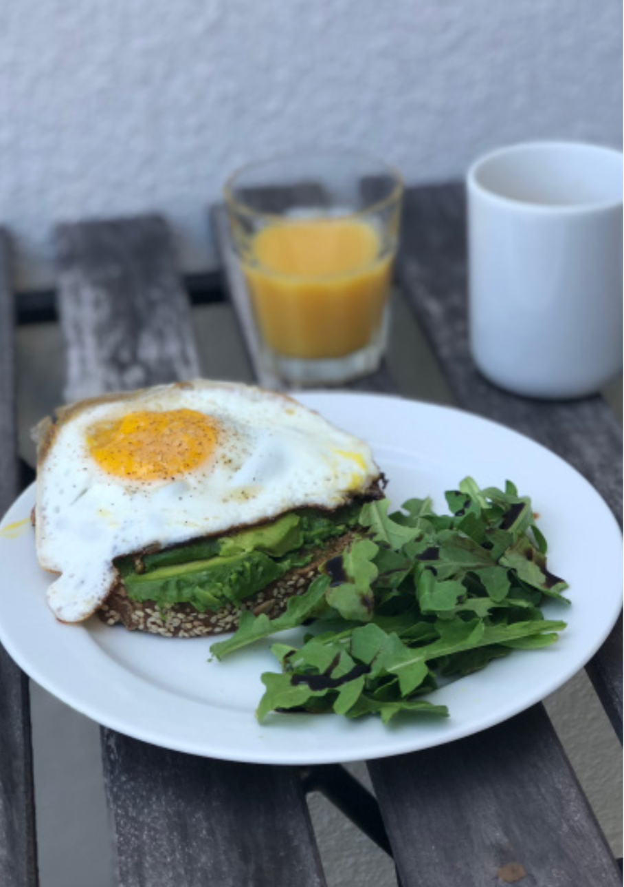
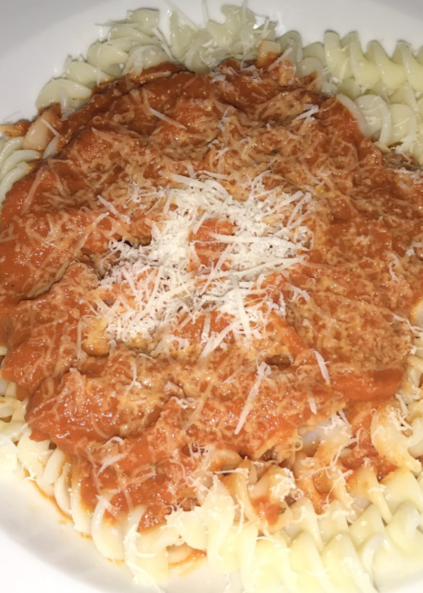
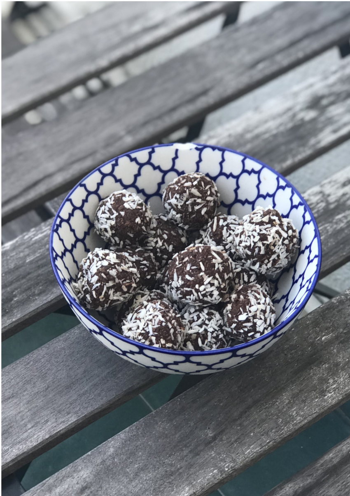

Welcome To Cooking For College
Homemade Granola
Directions
1. Preheat an oven to 350 degrees F (175 degrees C).
2. Place the rolled oats in a mixing bowl together with the chopped almonds and the seeds.
3. Heat up the honey in a saucepan until boiling.
4. Then mix the honey with the oat mix.
5. Place baking paper on a baking tray and spread the oat mix onto the baking paper.
6. Bake for 10 min until golden brown. With a spatula, mix the oats.
7. Bake for another 10 mins until golden brown.
8. Remove the oat mix from the oven and leave it to cool.
9. Once it has cooled down, transfer the oat mix to a large mixing bowl and add the dry fruits.
Ingredients
2 cups Rolled Oats
100g Chopped Almonds
100g Pumpkin seeds
100g Sunflower seeds
50g Dried apricots
100g Dried cranberries
100g Honey
Crushed Avocado & Poached Egg on Farmhouse Bread
Directions
1. Fry the egg scrambled or paoched, your choice.
2. Crush the avocado with a fork and place on top of the toasted farmhouse bread.
3. Add the egg ontop of your avocado and add a pinch of salt & pepper
4. Place a handful of arugula and add some balsamic vinegar to serve with the dish
Ingredients
1 slice of farm house bread
1 ripe avocado
1 egg
1 handful of arugula
1tblsp balsamin vinegar

Chorizo Pasta
Directions
1. Cut the red bell peppers in half and brush them with olive oil.
2. Place them on a piece of baking paper, Skin side up Bake for 10 mins.
3. Turn on the grill. Grill the bell pepper until the skin starts to bubble up.
4. Place the peppers in a small ziploc bag while it’s still hot while you prepare the sauce.
5. Sauce Chop onions & garlic and stir fry with a bit of olive oil Let simmer until the onions are soft.
6. Then add the pasta and let this simmer on low heat add 2 tblsp of cream.
7. Take bell peppers out of the plastic bag. Gently peel off the skin. Add them to the sauce. Turn off the heat.
8. Take a stick blender and pure until smooth Turn the heat back on, simmer on low heat, Add chopped chorizo to a separate dry frying pan. Fry for 1-2 mins (make sure they don’t become hard).
Ingredients
Quinoa
1 jar Tomato sauce
2 red onions, chopped
1/2 onion
1 garlic clove
1 chorizo sausage
1 tblsp Olive oil
1 tblsp cream

Energy Balls
Directions
1. Mix all ingredients in a blender.
2. If the mixture is dry, we recommend to add more tsp of water.
3. Form approximately 10 small balls. Dip and roll the energy balls in grated coconut.
4. Place in fridge to chill.
Ingredients
100g Oats
100ml Virgin olive oil
50g Coca powder
100g Grated coconut
1tsp Honey
2tsp Water
10 Pitted dates
